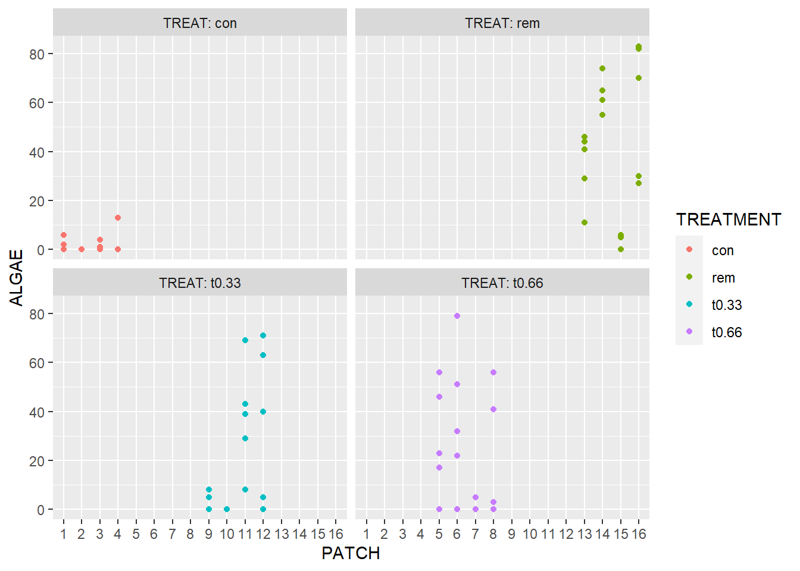
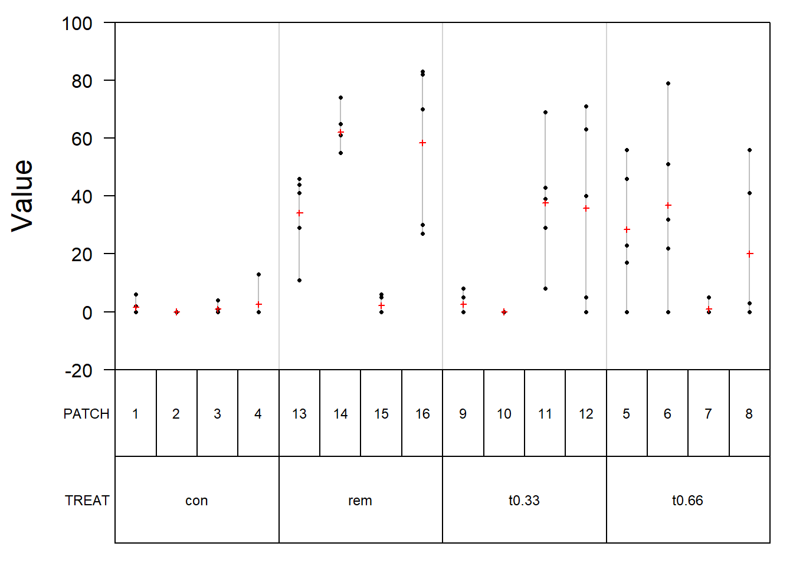

# get the data
df <- read.csv("data/andrew.csv")Two-way ANOVA (fixed and random effects)
Data we’ll use: andrew.csv (chap 9), boîte 9.1 p. 209 Quinn & Keough
Box 9.1 Worked example of nested ANOVA: grazing by sea urchins
Andrew & Underwood (1993) manipulated the density of sea urchins in the shallow subtidal region of a site near Sydney to test the effects on the percentage cover of filamentous algae (ALGAE). There were four urchin treatments (TREAT) (no urchins, 33% of original density, 66% of original density and 100% of orginal density). The treatments were replicated in four distinct patches (PATCH) (3–4 m2) per treatment and percentage cover of filamentous algae (response variable) was measured in five random quadrats (QUAD) per patch.
Note
This is a nested design with treatment (fixed factor), patch nested within treatment (random factor) and quadrats as the residual.
# view the data
DT::datatable(df)Plot the data
library(ggplot2)
ggplot(df, aes(x = factor(PATCH), y = ALGAE, color = TREAT)) +
geom_point() +
facet_wrap(~ TREAT, labeller = label_both) +
labs(x = "PATCH", color = "TREATMENT")
Null hypotheses
No difference in the mean amount of filamentous algae between the four sea urchin density treatments.
No difference in the mean amount of filamentous algae between all possible patches in any of the treatments.
Anova with fixed and random effects (anovaMM)
# make sure the factors are correct
df$PATCH <- as.factor(df$PATCH)
df$TREAT <- as.factor(df$TREAT)library(VCA)
model_vca <- anovaMM(ALGAE ~ TREAT + (TREAT/PATCH), Data = df)
model_vca
Analysis of Variance Table:
---------------------------
DF SS MS F value Pr(>F)
TREAT 3 14429.1 4809.71 16.10754 6.57940e-08 ***
TREAT:PATCH 12 21242.0 1770.16 5.92821 8.32261e-07 ***
error 64 19110.4 298.60
---
Signif. codes: 0 '***' 0.001 '**' 0.01 '*' 0.05 '.' 0.1 ' ' 1
Mean: 20.2625 (N = 80)
Experimental Design: balanced | Method: ANOVA# plot the model
plot(model_vca)
# coefficients
coef(model_vca) int TREATcon TREATrem TREATt0.33
2.116316e+01 -1.589053e+01 3.723684e+01 -1.730526e+00
TREATt0.66 TREATcon:PATCH1 TREATcon:PATCH2 TREATcon:PATCH3
-2.832156e-15 -3.672632e+00 -5.272632e+00 -4.272632e+00
TREATcon:PATCH4 TREATt0.66:PATCH5 TREATt0.66:PATCH6 TREATt0.66:PATCH7
-2.672632e+00 7.236842e+00 1.563684e+01 -2.016316e+01
TREATt0.66:PATCH8 TREATt0.33:PATCH9 TREATt0.33:PATCH10 TREATt0.33:PATCH11
-1.163158e+00 -1.683263e+01 -1.943263e+01 1.816737e+01
TREATt0.33:PATCH12 TREATrem:PATCH13 TREATrem:PATCH14 TREATrem:PATCH15
1.636737e+01 -2.420000e+01 3.600000e+00 -5.620000e+01
TREATrem:PATCH16
0.000000e+00 Confidence intervals
Function VCAinference constructs one- and two-sided confidence intervals, and performs Chi-Squared tests for total and error variance against claimed values for ‘VCA’ objects.
VCAinference(model_vca)
Inference from Linear Model Fit:
--------------------------------
> ANOVA Table:
--------------
DF SS MS F value Pr(>F)
TREAT 3 14429 4810 16.108 6.579e-08 ***
TREAT:PATCH 12 21242 1770 5.928 8.323e-07 ***
error 64 19110 299
---
Signif. codes: 0 '***' 0.001 '**' 0.01 '*' 0.05 '.' 0.1 ' ' 1
Mean: 20.2625 (N = 80)
Experimental Design: balanced | Method: ANOVA
> VC:
-----
Estimate CI LCL CI UCL One-Sided LCL One-Sided UCL
total 298.6 217.1536 436.5502 228.3877 410.1393
error 298.6 217.1536 436.5502 228.3877 410.1393
> SD:
-----
Estimate CI LCL CI UCL One-Sided LCL One-Sided UCL
total 17.28 14.7361 20.8938 15.1125 20.2519
error 17.28 14.7361 20.8938 15.1125 20.2519
> CV[%]:
--------
Estimate CI LCL CI UCL One-Sided LCL One-Sided UCL
total 85.2809 72.7261 103.1155 74.5836 99.9477
error 85.2809 72.7261 103.1155 74.5836 99.9477
95% Confidence Level
SAS PROC MIXED method used for computing CIs Using function lmer()
library(lme4)
model <- lme4::lmer(ALGAE ~ TREAT + (1 | TREAT/PATCH), data = df, REML=FALSE)
modelLinear mixed model fit by maximum likelihood ['lmerMod']
Formula: ALGAE ~ TREAT + (1 | TREAT/PATCH)
Data: df
AIC BIC logLik deviance df.resid
720.8312 737.5054 -353.4156 706.8312 73
Random effects:
Groups Name Std.Dev.
PATCH:TREAT (Intercept) 14.35
TREAT (Intercept) 0.00
Residual 17.28
Number of obs: 80, groups: PATCH:TREAT, 16; TREAT, 4
Fixed Effects:
(Intercept) TREATrem TREATt0.33 TREATt0.66
1.30 37.90 17.70 20.25
optimizer (nloptwrap) convergence code: 0 (OK) ; 0 optimizer warnings; 1 lme4 warnings The fixed effects indicate how each treatment compares to the baseline level (intercept) of ALGAE. Each treatment increases the expected ALGAE level by the respective amounts.
The random effects suggest variability in ALGAE levels based on the combination of PATCH and TREAT, but no variability in the treatment effect itself (as indicated by the zero standard deviation for TREAT).
The residual standard deviation indicates how much variability remains in ALGAE after accounting for the fixed and random effects.
Conclusion
Overall, this model suggests that while different treatments lead to significant changes in the response variable, the variability of these effects across patches is substantial, with no inherent random variability in treatment effects themselves.